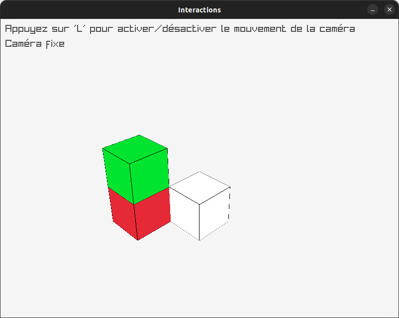
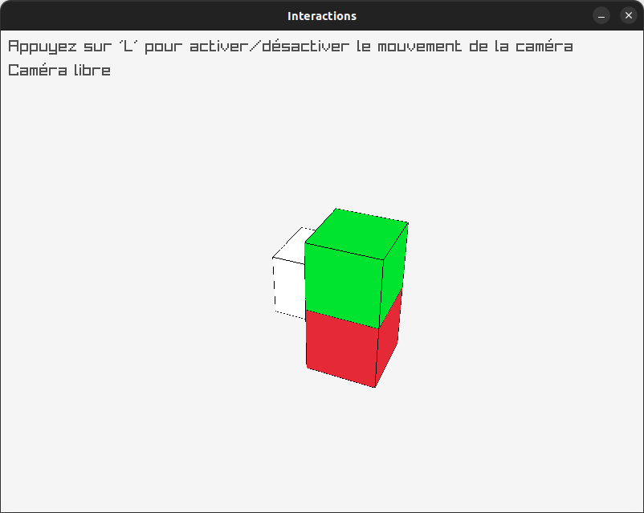
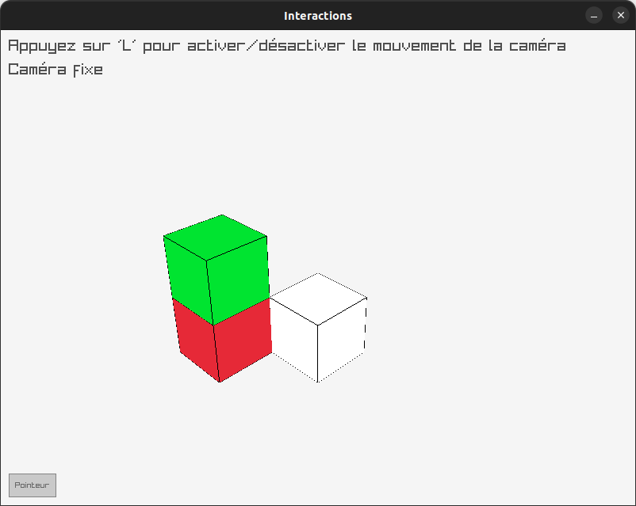
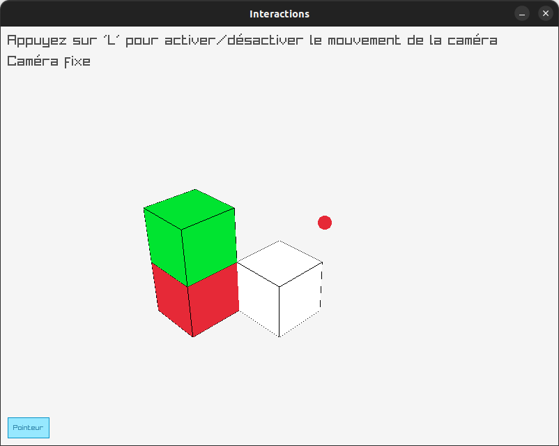

Quatrième exemple : interactivité (souris, clavier, boutons, ...)¶
Dans ce quatrième exemple, nous allons voir trois interactions possibles :
- le clavier : utiliser une touche pour activer ou non le déplacement de la caméra ;
- la souris : récupérer sa position et l'utiliser pour y dessiner un objet ;
- raygui : utiliser un bouton pour activer une fonctionalité.
Comme pour le troisième exemple, vous pouvez ici repartir de celui-ci, puis éditer les fichiers modifiés ; p.ex. sous Unix :
Commençons par ajouter deux attributs à la classe raylibRender pour gérer l'état (actif ou non) du mouvement de la caméra et du dessin du pointeur de souris :
// ...
class raylibRender : public SupportADessin {
// ...
private:
// ...
bool deplacement;
bool pointeur;
};
que l'on initialise par défaut dans raylib/raylib_render.cpp :
// ... (en-têtes)
raylibRender::raylibRender()
: liste_contenus({
Contenu(),
Contenu({-1,1,1}, VERT),
Contenu({-1,0,1}, ROUGE)
})
, deplacement(false)
, pointeur(false)
{
// ... (comme avant)
}
Décidons d'activer le déplacement avec la touche L. Pour cela, on vérifie dans la boucle principale si la touche L est pressée, et si oui, on change l'état du déplacement. Puis on met à jour la caméra seulement si le déplacement est activé :
void raylibRender::run() {
while (!WindowShouldClose()) {
if (IsKeyPressed(KEY_L)) {
deplacement = !deplacement;
}
if (deplacement) {
UpdateCamera(&camera, CAMERA_FREE);
}
// ...
}
}
Ajoutons également un message à l'écran pour indiquer si le déplacement est activé ou non.
Pour que le texte soit correctement visible, on ne le dessine pas dans le mode 3D, mais après avoir quitté ce mode 3D.
Pour le paramétrage du texte, on donne la chaîne de caractères à afficher, la position du texte (les deux premiers arguments numériques), la taille de la police et la couleur du texte.
En cas d'utilisation d'une string C++, il faut la convertir en « chaîne à la C » via la méthode c_str().
Cela donne le code suivant :
void raylibRender::run() {
// ...
EndMode3D();
DrawText("Appuyez sur 'L' pour activer/désactiver le mouvement de la caméra", 10, 10, 20, DARKGRAY);
DrawText((std::string("Caméra ") + (deplacement ? "libre" : "fixe")).c_str(), 10, 40, 20, DARKGRAY);
EndDrawing();
}
}
Et il ne faut pas oublier d'ajouter #include <string> dans l'entête.
Le code ci-dessus utilise l'opérateur ternaire
?:que vous ne connaissez peut être pas encore. Cet opérateur utilise trois argument (A,BetC) :A ? B : Cet il : 1. évalueA; 2. évalueBsiAest vrai, et sinon évalueC; 3. vaut le résultat de la dernière évaluation (BouC). > Dans le cas ci-dessus,(deplacement ? "libre" : "fixe")vaut donc"libre"sideplacementest vrai et"fixe"sinon.
On peut essayer compiler et voir l'effet de nos modifications :
- ajoutez le nouveau dossier au
CMakeLists.txtprincipal :add_subdirectory(QuatriemeExemple); - remplacez trois fois
Dessin3parDessin4dans chacune des lignes deQuatriemeExemple/general/CMakeLists.txt; - remplacez
TroisiemeExempleparQuatriemeExempledans la dernière ligne deQuatriemeExemple/general/CMakeLists.txt; - dans
QuatriemeExemple/raylib/CMakeLists.txt: remplacez simplement3par4; cela :- remplace trois fois
RayRender3parRayRender4; - remplace une fois
Dessin3parDessin4; - remplace deux fois
exemple3parexemple4.
- remplace trois fois
En lançant bin/exemple4, vous devriez alors obtenir :
| Mouvement OFF | Mouvement ON |
|---|---|
 |
 |
Voyons maintenant comment ajouter un bouton. Pour cela, nous allons utiliser la bibliothèque raygui, que l'on importe comme suit :
// raylib_render.cpp
#include "raylib_render.h"
#include <string>
#define RAYGUI_IMPLEMENTATION
#include <raygui.h>
#undef RAYGUI_IMPLEMENTATION
raylibRender::raylibRender()
// ...
Dû à sa conception, il est nécessaire de mettre
#define RAYGUI_IMPLEMENTATIONavant d'inclure le fichier d'en-tête.
Sur le GitHub de raygui, nous pouvons trouver les différents composants disponibles, ainsi que divers programmes pouvant être utile pour réfléchir à l'interface graphique, comme un éditeur de layout ou d'icones, et des exemples d'utilisation.
Pour ce que nous allons faire, le plus adapté est un bouton ON/OFF (« toggle »), que l'on peut créer comme suit :
void raylibRender::run() {
while (!WindowShouldClose()) {
// ...
BeginDrawing();
// ...
GuiToggle(Rectangle(10, 560, 60, 30), "Pointeur", &pointeur);
EndDrawing();
}
}
Ce bouton prend en argument un rectangle (la position et la taille du bouton), le texte à afficher et un pointeur vers une variable booléenne qui va changer d'état lorsque l'on clique sur le bouton.
Pour un bouton classique, l'utilisation est un peu différente :
Donc il ne faut pas hésiter à chercher comment s'utilise un composant avant de l'utiliser.
Pour récupérer la position de la souris, on peut utiliser la fonction GetMousePosition(), qui renvoie un Vector2 avec les coordonnées de la souris. On peut alors dessiner p.ex. un cercle à cette position :
void raylibRender::run() {
while (!WindowShouldClose()) {
// ...
BeginDrawing();
// ...
GuiToggle(Rectangle(10, 560, 60, 30), "Pointeur", &pointeur);
if (pointeur) {
auto [x, y] = GetMousePosition();
DrawCircle(static_cast<int>(x), static_cast<int>(y), 10.0f, RED);
}
EndDrawing();
}
}
Pour compiler, comme raygui est un fichier d'en-tête, il faut inclure son dossier dans les endroits où chercher. On utilise pour cela la commande target_include_directories. Par contre, il ne faut par ailleurs pas utiliser ici les options de compilation ${PROJECT_WARNING_FLAGS} qui génèreront bien trop de warnings en raison du C de raygui :
# QuatriemeExemple/raylib/CMakeLists.txt
add_library(RayRender4 raylib_render.h raylib_render.cpp)
target_include_directories(RayRender4 PRIVATE ${raygui_SOURCE_DIR}/src)
target_link_libraries(RayRender4 raylib Dessin4)
add_executable(exemple4 main_raylib.cpp)
target_compile_options(exemple4 PRIVATE ${PROJECT_WARNING_FLAGS})
target_link_libraries(exemple4 RayRender4)
Compilez, en ignorant les « warnings » propres à raygui.h (petite différence de norme entre C et C++).
Vous pouvez aussi supprimer ces warnings en demandant au compilateur de les ignorer en ajoutant l'option
-Wno-enum-compare:
L'exécutable devrait alors donner un affichage comme suit :
| Pointeur OFF | Pointeur ON |
|---|---|
 |
 |
Il est aussi possible de faire un bouton sans utiliser raygui, mais cela est sensiblement plus complexe.